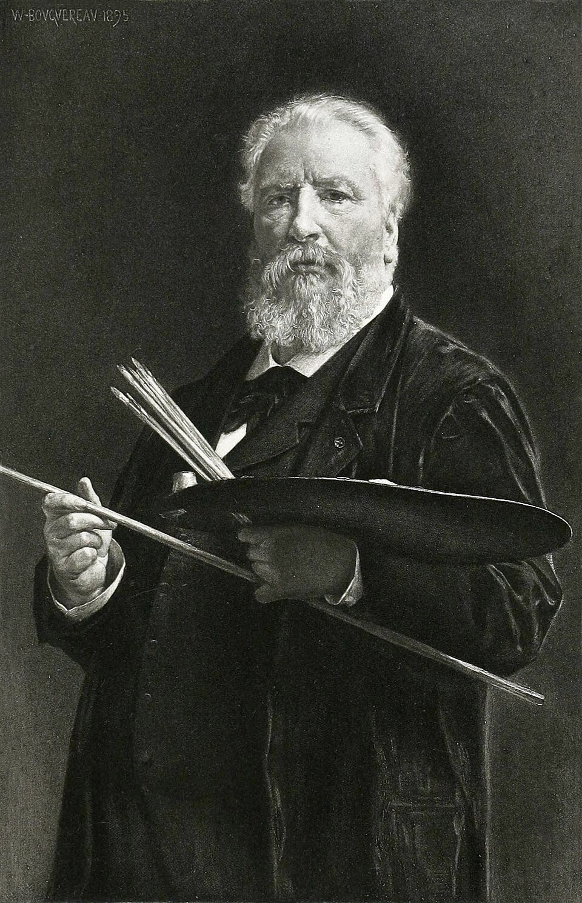

Pintor académico francés
William Bouguereau
1825–1905
Nacido en La Rochelle, ganó el Premio de Roma en 1850 y fue durante medio siglo el pintor más prestigioso de la Academia y del Salón de París, con un acabado tan pulido que no se ve la pincelada. Los impresionistas hicieron de él el emblema de todo lo que combatían, y el siglo XX lo olvidó hasta la exposición retrospectiva de 1984. Muchos de sus grandes lienzos cruzaron el Atlántico en vida, comprados por coleccionistas de Estados Unidos y de Argentina.